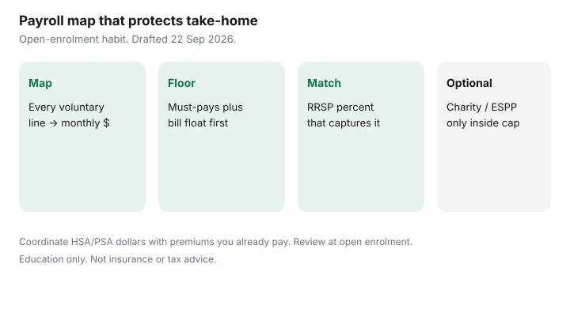

Personal Finance · Canada
Optimize Canadian Payroll Deductions: Benefits, Charity, and RRSP Without Starving Cashflow
Voluntary payroll deductions shrink take-home one line at a time until a PAD bounces. RRSP, ESPP, charity, optional insurance, and transit benefits can each be rational. Together, without a map, they are how a raise disappears before rent.
This page is a Canadian take-home protection checklist. Capture value you already pay for; cut elections that do not fit. Education only. Figures ~22 Sep 2026.
Disclosure: Banking, tax software, and benefits-adjacent products are offer types. Saving Optimizer may later add partner links. We do not currently claim HR, payroll, or insurance partnerships. Education only — not tax or insurance advice. No payday or debt-settlement offers.
Key takeaways
- Map every voluntary deduction to a monthly dollar amount before open enrolment.
- Order: employer RRSP match, then benefits you use, then charity and ESPP only if cashflow survives.
- Coordinate HSA/PSA dollars with premiums you already pay — do not double-cover blindly.
- Charitable payroll needs a receipt path; it is still a donation for credit purposes.
- Review once a year on a calendar reminder, not when an NSF lands.
Map every voluntary payroll deduction
Pull two recent pay stubs and the benefits booklet. Build a table: line name, monthly amount, cancel/change window, and purpose. Include:
- Group RRSP / DPSP employee percent
- Optional life, disability, or critical-illness top-ups
- ESPP or purchase-plan contributions
- Charitable campaign deductions
- Transit, parking, or other taxable-benefit elections where offered
- Any wellness or spending-account payroll top-up
Statutory deductions stay on the stub for context. The optimisation target is the voluntary block.

Benefits vs HSA/PSA dollars you already pay for
Premiums for core health and dental are often shared. A health spending account (HSA) or personal spending account (PSA) is a separate credit with a plan-year deadline. Households waste money by ignoring the HSA while paying for overlapping coverage, or by buying optional riders they never use.
Walk the capture list on employer HSA and benefits: plan-year deadlines, spouse coordination, and job-change cutoffs. Then ask whether each optional rider still earns its premium.
Charitable payroll vs lump donations
Payroll charity is convenient. Confirm you receive a charitable receipt or that the amount is reported for the credit. Federal donation credit structure (including 14% on the first $200 in 2026 on the federal side, as used on this site) is summarised on tax credits households miss.
A lump donation sized in December can be easier when cashflow is uneven. Do not run payroll charity so high that grocery money moves to a campaign you could have given to once.
RRSP/ESPP deductions sized to cashflow
RRSP: set payroll to capture the match when the percent fits — details on payroll versus personal RRSP and employer match. ESPP: only after the match and benefits map, using ESPP discount checklist.
| Bucket | Monthly target |
|---|---|
| Must-pays (housing, utilities, insurance, minimums, childcare) | Your real total |
| One-month float held in chequing/HISA | Same as must-pays (build once) |
| Voluntary payroll cap | Net pay minus must-pays minus grocery/transport floor |
| Inside the cap: match RRSP first | Percent that completes the match |
| Then: used benefits, then charity/ESPP | Only what remains under the cap |
Annual open-enrolment review habit
Put a calendar event two weeks before open enrolment. Agenda: pay-stub map, HSA balance and deadline, match percent, ESPP election, charity amount, optional insurance riders. After a life event (move, baby, job change), re-check mid-year rules instead of waiting.
Pair the review with zero-based budgeting so payroll elections appear as assigned dollars, not surprises.
A take-home pay protection checklist
- Voluntary lines listed with monthly dollars.
- Must-pay total and float defined.
- Match percent on; ESPP and charity only inside the cap.
- HSA/PSA spending plan before expiry.
- Spouse coordination done once per year.
- Open-enrolment reminder on the calendar.
- After any raise: revisit the cap before lifestyle and elections expand together.
Sources & date stamps
- CRA — payroll topics for employers on canada.ca; employees use pay stubs and plan booklets for elections (~22 Sep 2026).
- CRA — RRSP limits ($33,810 dollar ceiling for 2026) when sizing payroll contributions.
- FCAC — budgeting guidance; NSF context after the 12 March 2026 $10 cap at federally regulated banks.
- Employer benefits booklets — open enrolment and spending-account rules are plan-specific.
Frequently asked questions
What counts as a voluntary payroll deduction?
Amounts you elect: group RRSP or DPSP employee percent, ESPP, charitable campaigns, optional insurance, transit benefits, and similar lines. Statutory CPP, EI, income tax, and union dues required by agreement are different — map them, but you may not turn them off.
Should charitable payroll replace a lump donation?
Only if you still get a proper receipt or reported amount for the credit, and the monthly hit fits cashflow. A lump donation you control can be easier to size against the 14% / 29% federal donation credit structure described on this site’s credits guide.
How do I protect take-home pay?
List every voluntary line with a monthly dollar estimate. Cap the total so rent, minimums, and a one-month float still clear. Raise RRSP only to the match if cash is tight.
When is open enrolment?
Most employers run benefits changes once a year, with limited mid-year events (marriage, birth, job change). Put the review on the calendar beside the RRSP match check.
Do HSA dollars replace benefits premiums?
No. A Canadian health spending account is a credit inside a plan year — not a US HSA and not a substitute for understanding premiums you already pay. See the employer HSA guide.